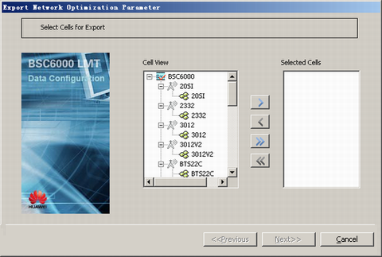
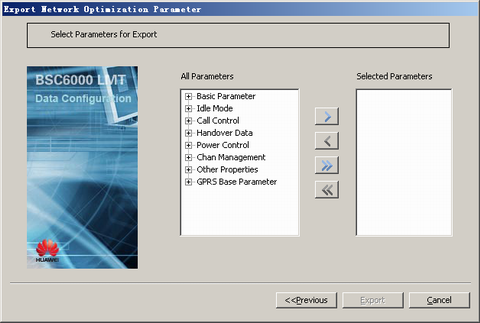

This describes how to export the network optimization parameters of the cell to the local PC.
Prerequisites
- The LMT runs normally.
- The communication between the LMT and the BSC is normal.
Procedure
- Choose . A dialog box is displayed, as shown in Figure 1.
Figure 1 Export Network Optimization Parameter dialog box
- Select the cell whose parameters need be exported from the Cell View box and add them to the Selected Cells box, and then click Next. A dialog box is displayed, as shown in Figure 2.
Figure 2 Selecting parameters for export
- Select the parameters to be exported from the All Parameters box and add them to the Selected Parameters box.
- Click Export. The Save As dialog box is displayed. Save the parameters in a file to the specified directory.
- The information that saving the parameters is complete is displayed.
Copyright © Huawei Technologies Co., Ltd.